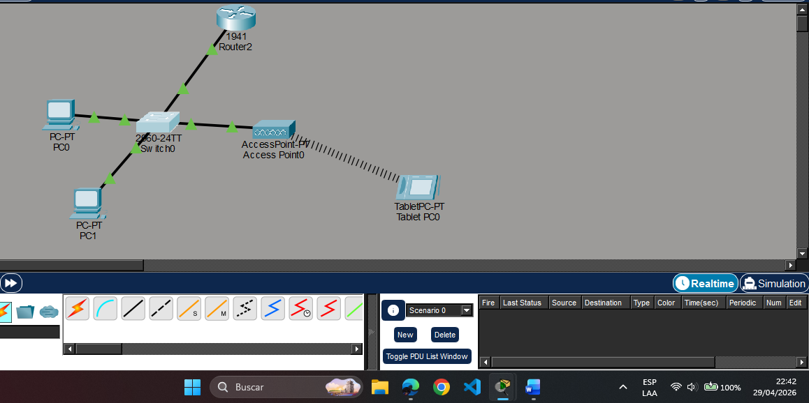
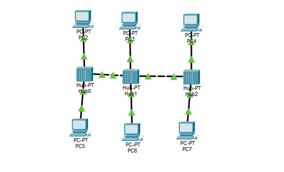
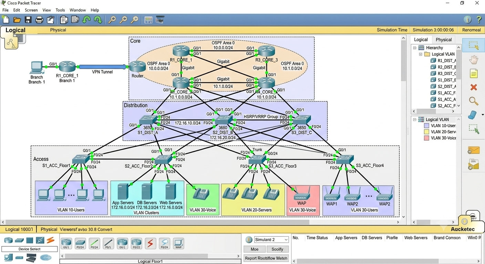
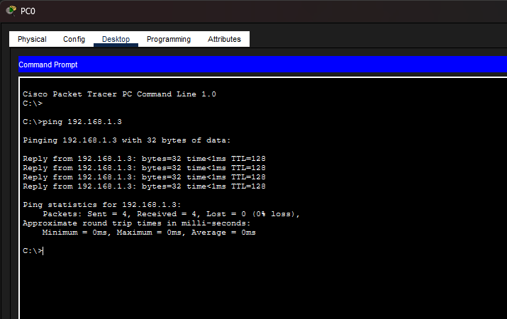

1. Explicación del Concepto: El Realismo de la Simulación de Redes
Cisco Packet Tracer es una potente herramienta de simulación que permite diseñar, configurar y diagnosticar redes de datos en un entorno virtual seguro.
Lo que hace destacar a este software no es solo la capacidad de arrastrar componentes a una pantalla, sino su alto nivel de realismo. Packet Tracer emula de forma precisa el comportamiento del sistema operativo de red (Cisco IOS), los protocolos de enrutamiento y el flujo de tráfico de datos tal como ocurren en el mundo real.
Permite comprender cómo interactúan los dispositivos antes de manipular el hardware físico, minimizando errores críticos en implementaciones reales.


2. Ejemplo Práctico: ¿Qué podemos lograr en los laboratorios?
A través de los laboratorios prácticos del curso, se puede experimentar todo el alcance de una infraestructura de red básica y avanzada mediante actividades clave:
Diseño de Topologías
Ubicación y organización estratégica de dispositivos finales (PCs, Laptops) y dispositivos intermediarios (Switches y Routers) para estructurar una red lógica eficiente.
Conectividad Física
Selección y uso correcto del cableado según el estándar requerido, aprendiendo a diferenciar cuándo implementar cables de cobre directos, cruzados o enlaces de fibra óptica de alta velocidad.
Configuración y Diagnóstico
Asignación de direcciones IP, configuración de interfaces y ejecución de pruebas esenciales como el comando ping y el rastreo de paquetes en tiempo real para verificar el flujo de información.

Estructuración física y lógica de switches y routers interconectados.

Diagnóstico de conectividad mediante comandos de consola ICMP.
3. Reflexión Personal
¿Por qué elegí este tema?
Elegí Cisco Packet Tracer porque durante mis prácticas profesionales tuve la oportunidad de convivir con Ingenieros en Sistemas, algunos de ellos con especializaciones en Telecomunicaciones. Ellos me mostraron los diferentes sistemas que utilizan en el día a día para monitorear servidores, evaluar vulnerabilidades y gestionar la red.
Además, pude ingresar a su Data Center, donde observé en vivo los racks con los switches, los sistemas de refrigeración especializados, el orden del cableado Ethernet y los paneles de conexión. Ver la infraestructura real hizo que todo lo aprendido en las simulaciones cobrara un sentido práctico y fascinante.
¿Dónde se aplica y cuál es su valor profesional?
Esta herramienta se aplica directamente en el diseño previo de redes empresariales y en la preparación para certificaciones oficiales de Cisco (como el CCNA, enfocado en infraestructura). Dominar estas simulaciones es el primer paso para construir un perfil competitivo en el área de telecomunicaciones.
Es una habilidad altamente valorada que demuestra en el currículum (CV) que el estudiante posee la lógica y la capacidad técnica para diseñar, administrar y resolver problemas en redes de datos reales.